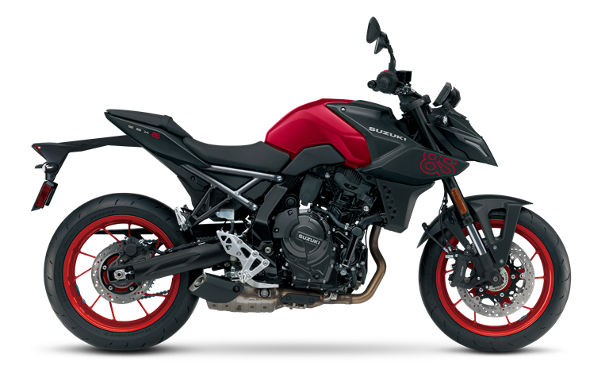
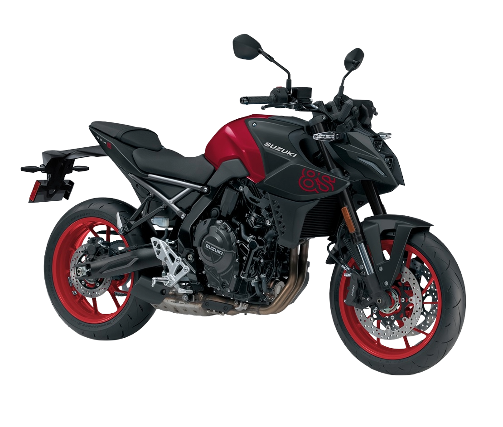

Suzuki GSX-8S
- Kategorija: Naked
- Brend: Suzuki
- Kvačilo: Wet, multi-plate
- Menjač: 6-stepeni
- Težina: 202 kg
- Visina od tla: 145 mm
- Visina sedišta: 810 mm
- Zadnji disk: 240 mm
- Rezervoar: 14 l
O modelu: Suzuki GSX-8S
Dizajniran za vozače koji cene agilnost, snagu i smelo stilizovanje, Suzuki GSX-8S je moderni naked motocikl koji spaja performanse i svakodnevnu upotrebljivost. Sa responzivnim paralel-twin agregatom od 776 kubika, ovaj motocikl pruža uzbudljivo iskustvo vožnje, bilo da krstarite otvorenim putem ili navigirate kroz gradsku gužvu.
Opremljen naprednim sistemima asistencije kao što su Bi-directional Quick Shift i kontrola trakcije, GSX-8S nudi vrhunsku tehnologiju upakovanu u rider-focused paket. Zahvaljujući agilnoj šasiji i prepoznatljivom, "mass-forward" dizajnu, ovaj model nudi izuzetan osećaj kontrole i upravljivosti, čineći ga odličnim izborom kako za iskusne vozače, tako i za one koji prelaze na klasu sa više snage.